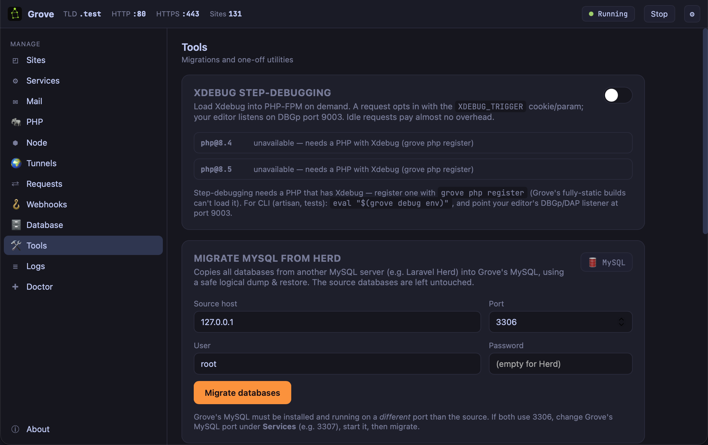

Chapter 12: A Breakpoint Instead of a Dump
Most PHP developers debug by printing things. Step-debugging is better in every way and almost nobody sets it up, because setting it up used to mean choosing between a debugger and a fast machine. That trade is gone; this chapter is the five minutes.
The problem
dd($user) tells you one value at one point.
If the value is wrong you learn nothing about
why, so you move the dump up a frame and run it
again. And again. Each iteration is a page reload and a
guess about where to look, and the guessing is the slow
part.
A step-debugger answers a different question. Stop here; now show me every variable in scope, the call stack that got here, and let me step forward one line at a time. You are not guessing where the value went wrong — you are watching it.
The hard way, and why nobody does it
Historically, enabling Xdebug meant loading it for every request, which made every request slower — noticeably, on a large framework. So people enabled it for an afternoon, felt their machine turn to treacle, and turned it off. The tool that would have saved them hours was a tool they associated with being slow.
On demand

grove debug on
Xdebug is loaded into PHP-FPM, but it only activates
for a request that opts in with an
XDEBUG_TRIGGER cookie or parameter. Your
editor listens on DBGp port 9003. Requests that do not opt
in pay almost no overhead.
So the debugger is always available and never in the way. A browser extension sets the cookie with one click; the page you are debugging stops at your breakpoint and every other page on your machine runs at full speed.
The honest catch
Read the panel: unavailable — needs a PHP with Xdebug.
Grove's own PHP builds are fully static, and a fully static binary cannot load a dynamic extension at runtime — that is what static means. The same property that makes those builds immune to a Homebrew upgrade breaking them is the property that stops them loading Xdebug. It is a real trade-off and the panel says so rather than leaving you to work it out from an error.
The fix is chapter 5's escape hatch:
grove php register /opt/homebrew/opt/php@8.4/sbin/php-fpmRegister a PHP that has Xdebug — from Homebrew, or any build you like — and isolate the site you are debugging to it. The rest of your sites keep the static builds. You pay the trade only where you need it, and only while you need it.
Debugging the command line
Breakpoints in an artisan command, a queue
job, or a failing test:
eval "$(grove debug env)"
php artisan queue:workThat exports the environment Xdebug needs for CLI processes in the current shell. Point your editor's DBGp listener at port 9003 and your breakpoint in a job handler is hit when the worker picks up the job.
Debugging a queue job is where step-debugging earns its keep most decisively, because it is the place dumping is worst: the output goes to a worker's log you are not watching, the job may be retried, and the state you care about is the payload it was given rather than anything you typed.
dd(), and the bug
that would have taken ten minutes takes two hours. Do it
now, on a quiet afternoon, and hit a breakpoint once so you
know it works.
What you learned
- A dump answers one question; a debugger answers the one you actually have.
- Trigger mode means always available, never in the way — requests that do not opt in pay almost nothing.
- Static builds cannot load Xdebug, which is the same property that makes them unbreakable. The panel says so.
- Register a PHP that has it and isolate only the site you are debugging.
- eval "$(grove debug env)" covers CLI — artisan commands, queue jobs, failing tests.
- Set it up on a quiet afternoon. Under pressure you will reach for dd() instead.